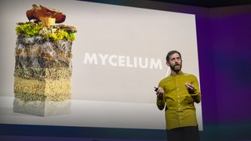
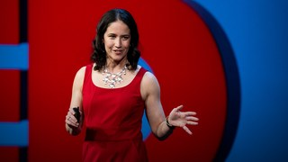

A monkey economy as irrational as ours
Laurie Santos looks for the roots of human irrationality by watching the way our primate relatives make decisions. A clever series of experiments in "monkeynomics" shows that some of the silly choices we make, monkeys make too.
Watch Next
-

Vaitea Cowan
How green hydrogen could end the fossil fuel era
Posted Apr 2019
-

Dan Widmaier
The future of fashion -- made from mushrooms
Posted Jan 2022
-

Catherine Price
Why having fun is the secret to a healthier life
Posted May 2018